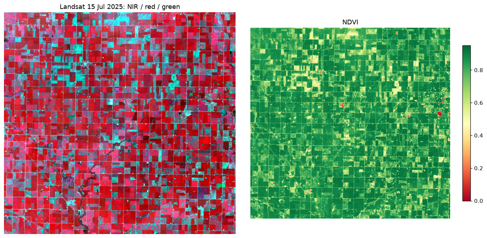
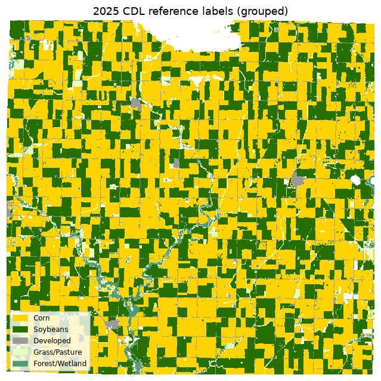
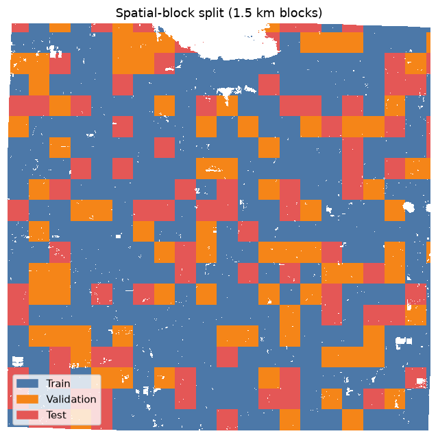
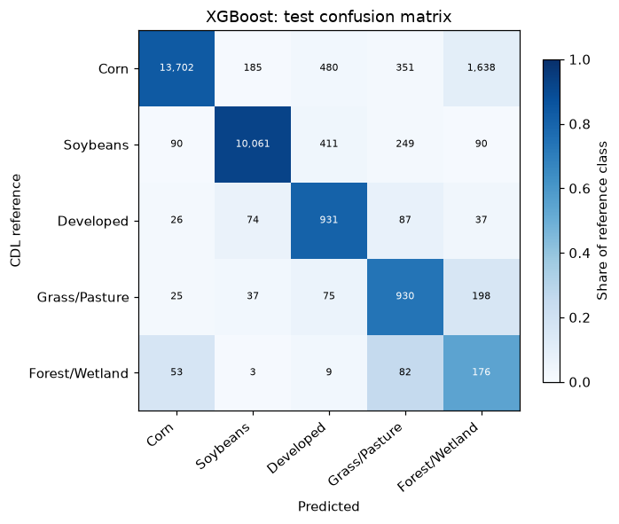
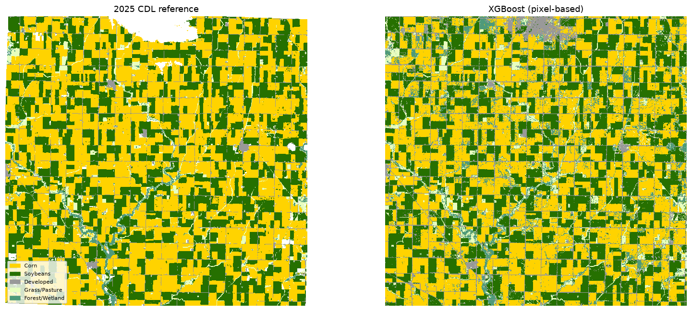
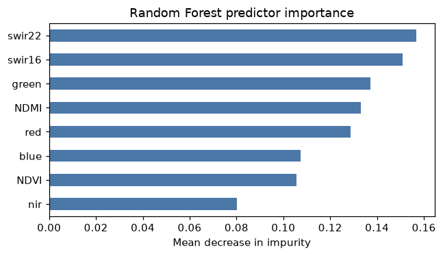
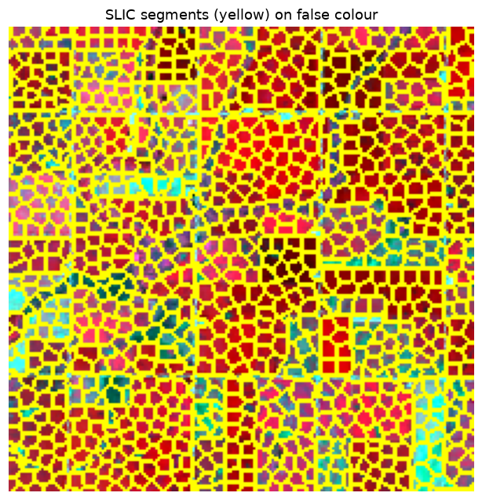
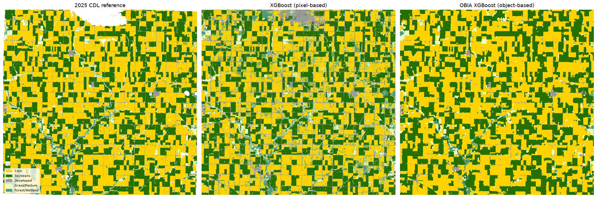
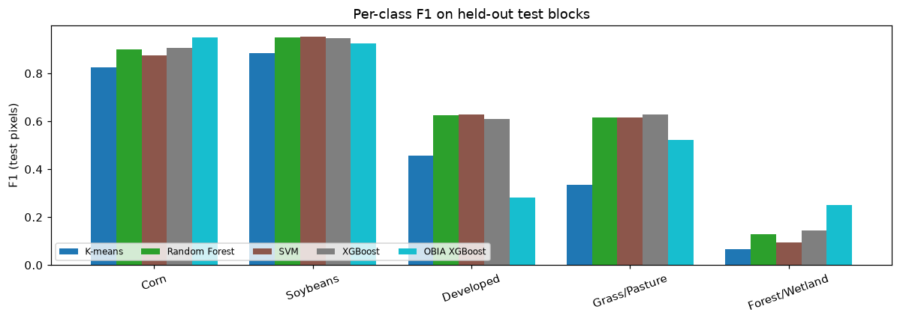

Classical Image Classification: Pixel-Based and Object-Based
This notebook maps land cover and crop type in the **U.S.
Overview
Corn Belt** (north-central Iowa) from a single mid-season Landsat scene (15 July 2025) and the 2025 USDA Cropland Data Layer (CDL) used as labelled data. Everything is done with GeoLattice (geolattice.rsense): reading and scaling Landsat Collection 2 data, quality masking, spectral indices, spatial train/validation/test splits, unsupervised and supervised classifiers, segmentation and object-based image analysis (OBIA).
Two ways of defining the unit of classification are compared:
Approach
Unit
Methods in this notebook
Pixel-based
One 30 m pixel and its eight predictors
k-means (unsupervised), Random Forest, SVM, XGBoost
Object-based (OBIA)
A segment (superpixel) described by band statistics and shape
SLIC segmentation + Random Forest / XGBoost
About the scene. The mid-season acquisition of 2025 available in Landsat_9/ is LC08_L2SP_027030_20250715 (the folder is named Landsat_9, but this scene was acquired by Landsat 8; the only 2025 Landsat 9 scene, 4 May, is too early in the season). Landsat 8 OLI and Landsat 9 OLI-2 share the same bands, 30 m grid and Collection 2 processing, so the workflow is identical for either. The image and the CDL labels are from the same growing season.
Core concepts
Learning objectives
Load, scale and quality-mask Landsat Collection 2 Level-2 data with GeoLattice.
Align a categorical reference raster (CDL) to the image grid and group its classes.
Build predictors (six reflective bands plus NDVI and NDMI).
Split labelled pixels into train / validation / test sets using spatial blocks.
Compare k-means, Random Forest, SVM and XGBoost, and choose a model on the validation set.
Segment an image, compute object features and classify objects (OBIA).
Evaluate every method on the same held-out test pixels.
Contents
Setup
Landsat data: scale, mask, indices
CDL 2025 reference labels
Train / validation / test split
Pixel-based classification
Final evaluation and map
Object-based classification (OBIA)
Pixel vs. object comparison
Summary and exercises
Setup
The notebook imports GeoLattice and the standard scientific stack:
geolattice.rsense (rs): raster input/output, Landsat scaling and QA masks, spectral indices and the compute backend.
geolattice.rsense.classify.image_classification (ic): label sampling, spatial splits, unsupervised and supervised classifiers, maps and accuracy reports.
geolattice.rsense.classify.obia: segmentation and per-object features.
rs.set_backend("cpu") keeps every array on the CPU so the notebook behaves identically on machines with and without a GPU. SEED makes the sampling, splits and models reproducible.
Installation. This notebook needs installation option 5 (core, spatial analysis, spatial statistics, geostatistics and remote sensing): pip install "geolattice[remote-sensing]". See “Installation options” in the GeoLattice README.
Code
import warnings # control warning messageswarnings.filterwarnings("ignore", category=UserWarning) # hide user warningswarnings.filterwarnings("ignore", category=RuntimeWarning) # hide numeric warnings (e.g. NaN means)warnings.filterwarnings("ignore", category=FutureWarning) # hide deprecation noticesimport json # read the scene metadatafrom pathlib import Path # file pathsimport numpy as np # arraysimport pandas as pd # tablesimport xarray as xr # labelled rastersimport rasterio # raster readingimport matplotlib.pyplot as plt # figuresfrom matplotlib.colors import ListedColormap # class coloursfrom matplotlib.patches import Patch # legend patchesfrom rasterio.enums import Resampling # resampling methodsfrom skimage.segmentation import mark_boundaries # draw segment outlinesimport geolattice.rsense as rs # GeoLattice remote sensingfrom geolattice.rsense.classify import image_classification as ic # GeoLattice image-classification modulefrom geolattice.rsense.classify import obia # GeoLattice object-based (OBIA) toolsrasterio.Env(CPL_LOG="/dev/null").__enter__() # silence GDAL log messagesplt.rcParams.update({"figure.dpi": 110}) # figure resolutionSEED =42# random seedprint("geolattice.rsense", rs.__version__, "| backend:", rs.set_backend("cpu")) # GeoLattice version and compute backend
geolattice.rsense 0.3.49 | backend: cpu
Locate the data
The cell finds the Corn_belt data folder whether Jupyter was started in this notebook’s folder or in the repository root, then defines the three inputs: the 15 July 2025 Landsat scene, the 2025 30 m CDL (labels) and the study-area polygon. A clear error is raised if a file is missing. request.json stored with the scene records which satellite acquired it; it is printed so the platform is visible.
Code
# Resolve the data folder for both common working directoriesCANDIDATES = [Path("../../../../Data/08_remote_sensing/08_09_image_classification/Corn_belt"), Path("Data/08_remote_sensing/08_09_image_classification/Corn_belt")]DATA =next((p for p in CANDIDATES if p.is_dir()), None) # the first candidate that existsif DATA isNone: # neither found# stop with a clear messageraiseFileNotFoundError("Run Jupyter from this notebook's folder or from the GeoLattice repository root.")SCENE_DIR = DATA /"Landsat_9"/"2025_07_LC08_L2SP_027030_20250715_02_T1"# mid-season 2025CDL_PATH = DATA /"CDL"/"30_m"/"CDL_2025_30m.tif"# 2025 labelsAOI_PATH = DATA /"aoi.geojson"# the study-area polygonfor p in (SCENE_DIR, CDL_PATH, AOI_PATH): # every input ...ifnot p.exists(): # ... must existraiseFileNotFoundError(p) # stop if one is missing# metadata of the downloaded Landsat scenescene = json.loads((SCENE_DIR /"request.json").read_text())["scenes"][0]# scene id, platform, date and cloud coverprint(f"Scene {scene['id']} | {scene['platform']} | {scene['datetime'][:10]} | cloud {scene['cloud']}%")
Scene LC08_L2SP_027030_20250715_02_T1 | landsat-8 | 2025-07-15 | cloud 3.66%
Landsat data: scale, mask, indices
Read the raw bands
rs.read returns each GeoTIFF as a georeferenced xarray.DataArray. With masked=False the stored integer digital numbers (DN) are kept untouched, because the next step converts them correctly. The six reflective bands (blue to SWIR2) and qa_pixel are combined into one xarray.Dataset. The pyrsense:sensor attribute tells GeoLattice which scaling rules to apply.
Code
BANDS = ["blue", "green", "red", "nir", "swir16", "swir22"] # the six reflective bands used as predictors# One DataArray per band, squeezed from (band, y, x) to (y, x); qa_pixel is read for maskingdn = xr.Dataset({b: rs.read(SCENE_DIR /f"{b}.tif", masked=False).squeeze("band", drop=True)for b in BANDS + ["qa_pixel"]})dn = dn.rio.write_crs(dn["red"].rio.crs) # attach the CRSdn.attrs["pyrsense:sensor"] ="landsat"# record the sensor for GeoLattice# size, pixel size and CRSprint(f"{dn.rio.width} x {dn.rio.height} pixels at {abs(dn.rio.resolution()[0]):.0f} m | CRS {dn.rio.crs}")w, s, e, n = dn.rio.transform_bounds("EPSG:4326") # scene bounds in longitude and latitudeprint(f"Scene bounds (lon/lat): {w:.3f}, {s:.3f}, {e:.3f}, {n:.3f}") # report them
1011 x 971 pixels at 30 m | CRS EPSG:32615
Scene bounds (lon/lat): -94.088, 42.790, -93.712, 43.055
Scale to reflectance and mask clouds
rs.optical.scale applies the Collection 2 Level-2 scale factors (DN * 2.75e-5 - 0.2) and turns fill values into NaN. rs.optical.landsat_qa_mask decodes the QA_PIXEL bit field and flags cloud, dilated cloud, cloud shadow and cirrus as invalid; snow=True also excludes snow/ice. The mask is applied to the labels later (see CDL 2025 reference labels), so these pixels never reach a classifier. The study-area polygon aoi.geojson is read with GeoPandas and compared with the scene bounds: the rasters were downloaded already clipped to this rectangle.
Code
import geopandas as gpd # vector data (the AOI)ls = rs.optical.scale(dn, sensor="landsat") # reflectance (0-1)clear = rs.optical.landsat_qa_mask(dn["qa_pixel"], snow=True) # True = usable pixelaoi = gpd.read_file(AOI_PATH) # the study-area polygonprint("AOI bounds (lon/lat):", np.round(aoi.total_bounds, 3)) # its boundsprint(f"Clear-sky pixels: {float(clear.mean()):.1%}") # share of clear pixels
Healthy crops reflect strongly in the NIR and absorb red light, so NDVI(NIR - Red) / (NIR + Red) separates dense mid-summer canopies from bare, built-up or sparse surfaces. NDMI(NIR - SWIR1) / (NIR + SWIR1) is sensitive to canopy water content, which differs among corn, soybeans, pasture and forest. ls.rs.index([...]) computes both from the scaled bands. The six reflectance bands and the two indices are merged into feat, the eight-predictor feature stack used by every classifier.
Code
vi = ls.rs.index(["NDVI", "NDMI"]) # GeoLattice spectral-index accessorfeat = xr.merge([ls[BANDS], vi]) # 6 bands + 2 indices on one gridFEATURES =list(feat.data_vars) # predictor namesprint("Predictors:", FEATURES) # show them
The left panel is a false-colour composite (NIR, red, green), where healthy vegetation is red. A 2nd-98th percentile stretch is used for display only. The right panel is NDVI. The checkerboard of field patterns typical of the Corn Belt is visible, along with towns and the river corridors.
Code
def stretch(da, lo=2, hi=98): # percentile stretch for display# Percentile stretch to 0-1 for display v = da.values a, b = np.nanpercentile(v, [lo, hi]) # 2nd and 98th percentilesreturn np.clip((v - a) / (b - a), 0, 1) # scale to 0-1# NIR, red, green as RGBfalse_colour = np.dstack([stretch(feat["nir"]), stretch(feat["red"]), stretch(feat["green"])])fig, axes = plt.subplots(1, 2, figsize=(13, 6)) # two panelsaxes[0].imshow(false_colour) # false colouraxes[0].set_title("Landsat 15 Jul 2025: NIR / red / green") # titleim = axes[1].imshow(feat["NDVI"], cmap="RdYlGn", vmin=0, vmax=0.95) # NDVI mapaxes[1].set_title("NDVI") # titleplt.colorbar(im, ax=axes[1], shrink=0.7) # colour barfor ax in axes: # every panel ax.axis("off") # no axesplt.tight_layout(); plt.show() # arrange and draw

CDL 2025 reference labels
The Cropland Data Layer gives one class code per 30 m pixel (it is itself a classification, trained on farm-service-agency crop reports, so it is a reference, not perfect field truth).
Align the CDL to the Landsat grid
The CDL uses NAD83 Conus Albers, the Landsat scene UTM zone 15N. reproject_match warps the CDL onto exactly the Landsat pixel grid. Nearest-neighbour resampling is mandatory for categorical data: bilinear interpolation would invent class codes that do not exist.
Code
cdl = rs.read(CDL_PATH, masked=False).squeeze("band", drop=True) # the 2025 CDL# on the Landsat grid (nearest neighbour keeps the codes)cdl = cdl.rio.reproject_match(feat["red"], resampling=Resampling.nearest)codes, counts = np.unique(cdl.values, return_counts=True) # CDL codes and their pixel counts# code -> class namelegend = pd.read_csv(DATA /"CDL"/"30_m"/"cdl_class_legend.csv").set_index("code")["class_name"]top = pd.DataFrame({"code": codes, "name": legend.reindex(codes).values, "pixels": counts}) # one row per codetop.sort_values("pixels", ascending=False).head(10).reset_index(drop=True) # the ten most common classes
code
name
pixels
0
1
Corn
514004
1
5
Soybeans
355566
2
176
Grassland/Pasture
38551
3
121
Developed/Open Space
22777
4
122
Developed/Low Intensity
17842
5
195
Herbaceous Wetlands
8943
6
190
Woody Wetlands
4814
7
0
Background
4679
8
123
Developed/Med Intensity
3033
9
37
Other Hay/Non Alfalfa
2234
Group CDL codes into five classes
The CDL has more than 100 codes, but a handful cover almost all of this AOI. They are grouped into five classes: Corn, Soybeans, Developed (all intensity levels), Grass/Pasture and Forest/Wetland (forest types plus woody and herbaceous wetlands, which are spectrally and ecologically similar). Open water (about 0.2 % of the area) and the many minor crops are left out (-1): classes this small have too few pixels for a reliable train/validation/test split, and forcing them into another class would corrupt the labels. Cloudy or shadowed pixels from the QA mask are also set to -1. The result is labels, an integer raster on the image grid that follows the GeoLattice convention (attrs["nodata"] = -1).
Code
# the five task classes and their CDL codesGROUPS = {"Corn": [1], "Soybeans": [5], "Developed": [121, 122, 123, 124], "Grass/Pasture": [176],"Forest/Wetland": [141, 142, 143, 190, 195]}CLASS_NAMES =list(GROUPS) # class namesCLASS_IDS =list(range(len(CLASS_NAMES))) # class ids 0-4COLORS = ["#ffd300", "#267000", "#999999", "#e8ffbf", "#4f9a7a"]CMAP = ListedColormap(COLORS) # colour map of the classesnames_by_id =dict(enumerate(CLASS_NAMES)) # id -> namelab = np.full(cdl.shape, -1, dtype="int32") # -1 = no labelfor i, group_codes inenumerate(GROUPS.values()): # each class ... lab[np.isin(cdl.values, group_codes)] = i # ... gets its id where the CDL code matcheslab[~clear.values] =-1# drop cloud / shadow pixelslabels = cdl.copy(data=lab).rename("labels") # as a DataArray on the Landsat gridlabels.attrs["nodata"] =-1# record the no-data value# labelled pixels per classpd.Series(np.bincount(lab[lab >=0], minlength=len(CLASS_NAMES)), index=CLASS_NAMES, name="pixels").to_frame()
pixels
Corn
501337
Soybeans
349351
Developed
43207
Grass/Pasture
37906
Forest/Wetland
15036
View the labels
Corn and soybeans cover about 90 % of the labelled area, so the problem is strongly imbalanced: developed land, pasture and forest/wetland have far fewer pixels. This is why the notebook reports macro F1 (the unweighted mean of per-class F1) and per-class scores, not just overall accuracy.
Code
fig, ax = plt.subplots(figsize=(8, 7)) # one panel# the label mapax.imshow(np.ma.masked_less(lab, 0), cmap=CMAP, vmin=-0.5, vmax=len(CLASS_NAMES) -0.5, interpolation="nearest")ax.legend(handles=[Patch(color=c, label=n) for c, n inzip(COLORS, CLASS_NAMES)], # class legend loc="lower left", fontsize=8, frameon=True)ax.set_title("2025 CDL reference labels (grouped)") # titleax.axis("off"); plt.show() # no axes, draw

Train / validation / test split
Neighbouring pixels in a field are almost identical. A random pixel split puts near-duplicates in both the training and test sets and inflates accuracy. GeoLattice therefore splits by geography: the area is cut into square blocks and whole blocks are assigned to one set.
Train (60 %): fits the models.
Validation (20 %): compares models and tunes choices.
Test (20 %): used once, at the end, to report accuracy.
Sample every labelled pixel
ic.sample_pixels(feat, labels) returns the feature table X, the label vector y and the map coordinates of each pixel (coords), dropping any pixel with a missing predictor. ic.spatial_block_split then assigns blocks of 1.5 km (50 pixels) to train, validation and test. stratify=y tries several block shuffles and keeps the one where each set covers the most classes. ic.check_split_isolation confirms that no pixel is in two sets.
Code
X, y, coords = ic.sample_pixels(feat, labels) # features, labels and coordinates of every labelled pixelBLOCK =1500# metres; larger than the typical field size# 60 / 20 / 20 split by 1.5 km blocks, class-balancedsp = ic.spatial_block_split(coords, block_size=BLOCK, test_size=0.2, val_size=0.2, seed=SEED, stratify=y)ic.check_split_isolation(train=sp.train, val=sp.val, test=sp.test) # no pixel in two splitssplit_table = pd.DataFrame({name: np.bincount(y[idx], minlength=len(CLASS_NAMES)) # pixels per class and splitfor name, idx in [("train", sp.train), ("validation", sp.val), ("test", sp.test)]}, index=CLASS_NAMES)split_table.loc["Total"] = split_table.sum() # totalssplit_table # show the table
train
validation
test
Corn
300906
100525
99905
Soybeans
206612
75778
66961
Developed
26903
8799
7505
Grass/Pasture
23237
6884
7785
Forest/Wetland
11070
2099
1867
Total
568728
194085
184023
Map the blocks
spl is a raster holding 0 (train), 1 (validation) or 2 (test) at each sampled pixel. To place the pixels back on the grid, the coordinates are converted into row and column indices (ix, iy). The map shows that each set is made of contiguous blocks. spl is reused for OBIA in the Object-based classification (OBIA) section.
Code
# Row/column of each sampled pixel on the raster gridix = np.searchsorted(feat.x.values, coords[:, 0])iy = np.searchsorted(-feat.y.values, -coords[:, 1]) # row of each sampled pixelspl = np.full(lab.shape, -1, dtype="int8") # -1 = not sampledfor k, idx inenumerate([sp.train, sp.val, sp.test]): # each split ... spl[iy[idx], ix[idx]] = k # ... written as 0, 1 or 2fig, ax = plt.subplots(figsize=(8, 7)) # one panelax.imshow(np.ma.masked_less(spl, 0), cmap=ListedColormap(["#4c78a8", "#f58518", "#e45756"]), vmin=-0.5, vmax=2.5, interpolation="nearest")ax.legend(handles=[Patch(color=c, label=n) for c, n in# legendzip(["#4c78a8", "#f58518", "#e45756"], ["Train", "Validation", "Test"])], loc="lower left")ax.set_title("Spatial-block split (1.5 km blocks)"); ax.axis("off"); plt.show() # title, no axes, draw

Draw the working samples
Fitting an SVM on 560,000 pixels would take hours and adds little accuracy, so the models are trained on a class-balanced sample of up to 3,000 pixels per class from the training blocks. The validation and test sets are random samples with natural class proportions (20,000 and 30,000 pixels): they must reflect the real class mix to give honest accuracy figures.
Code
rng = np.random.default_rng(SEED) # random generatordef cap_per_class(idx, n): # a capped, class-balanced subset of the indices idx# Up to n random pixels from each class in idx picks = [rng.choice(idx[y[idx] == c], min(n, int((y[idx] == c).sum())), replace=False)for c in CLASS_IDS if (y[idx] == c).any()]return np.concatenate(picks) # all picks togethertr = cap_per_class(sp.train, 3000) # balanced training sampleva = rng.choice(sp.val, 20_000, replace=False) # natural proportionste = rng.choice(sp.test, 30_000, replace=False) # natural proportionsprint("train:", len(tr), "| validation:", len(va), "| test:", len(te)) # sample sizes
train: 15000 | validation: 20000 | test: 30000
Pixel-based classification
All four methods see the same eight predictors for each pixel. Results are scored with a helper that wraps ic.classification_report, which returns overall accuracy, Cohen’s kappa, macro F1, per-class precision/recall/F1 and the confusion matrix.
Code
def evaluate(y_true, y_pred): # accuracy report with class names# Full GeoLattice report with readable class namesreturn ic.classification_report(y_true, y_pred, labels=CLASS_IDS, class_names=names_by_id)def summary_row(name, report): # the three headline scores of a report# overall accuracy, kappa and macro F1return {"Model": name, "Overall accuracy": report["overall_accuracy"],"Kappa": report["kappa"], "Macro F1": report["macro_f1"]}
Unsupervised: k-means
ic.unsupervised_classify z-scores the predictors, fits k-means on a random sample of image pixels and labels every pixel with its cluster. No labels are used, so the clusters are only spectral groups. We ask for 12 clusters, more than the 5 classes, because one land-cover class often spans several spectral clusters (for example early and late-planted soybeans). Each cluster is then named by the class that dominates it among the training pixels. This is the analyst’s step, automated, and it uses no validation or test labels.
Code
# Fit k-means on image spectra only (no labels involved)cluster_map, km = ic.unsupervised_classify(feat, n_classes=12, seed=SEED)def cluster_ids(idx): # cluster id of the sampled pixels idx# Cluster of each sampled pixel, using the fitted scaler and k-means modelreturn km.predict(km.normalizer_.transform(X.to_numpy()[idx]))# Name each cluster by its majority training classcrosstab = pd.crosstab(cluster_ids(tr), y[tr])cluster_to_class = crosstab.idxmax(axis=1).to_dict() # cluster -> its most common training class# class and training pixels of every clustercluster_names = pd.DataFrame({"class": [CLASS_NAMES[c] for c in cluster_to_class.values()],"training pixels": crosstab.sum(axis=1)}, index=crosstab.index)cluster_names.index.name ="cluster"# index namecluster_names.T # one column per cluster
cluster
0
1
2
3
4
5
6
7
8
9
10
11
class
Corn
Developed
Soybeans
Soybeans
Soybeans
Corn
Developed
Soybeans
Forest/Wetland
Forest/Wetland
Grass/Pasture
Developed
training pixels
1461
1346
1250
405
2050
1130
61
1140
2480
91
3409
177
Supervised: Random Forest, SVM and XGBoost
ic.train_pixel_classifier fits a supervised model by name ("rf", "svm" or "xgb"):
Random Forest: many decision trees on bootstrap samples; robust, little tuning, gives feature importance.
SVM (RBF kernel): finds a smooth maximum-margin boundary. It is sensitive to feature scale; all eight predictors here lie roughly between -1 and 1 and gamma="scale" adapts to their variance. C controls how strictly training errors are penalised. probability=False skips the slow probability calibration, which is not needed for class labels.
XGBoost: boosted trees built one after another, each correcting the previous errors.
Passing coords and block_size also returns a spatial cross-validation table (three folds of whole 1.5 km blocks inside the training data), an estimate of generalisation before the validation set is touched.
Code
PARAMS = { # settings of the three classifiers"rf": dict(n_estimators=300, n_jobs=-1),"svm": dict(C=10, kernel="rbf", gamma="scale", probability=False),"xgb": dict(n_estimators=300, max_depth=6, learning_rate=0.1, subsample=0.8, colsample_bytree=0.8, n_jobs=-1, random_state=SEED),}LABELS = {"rf": "Random Forest", "svm": "SVM", "xgb": "XGBoost"} # display namesmodels, cv_tables = {}, {} # fitted models and cross-validation tablesfor key, params in PARAMS.items(): # each classifier# fit on the training sample, 3-fold spatial CV inside it models[key], cv_tables[key] = ic.train_pixel_classifier( X.iloc[tr], y[tr], model=key, coords=coords[tr], block_size=BLOCK, n_splits=3, seed=SEED, **params)# mean cross-validation scorespd.DataFrame({LABELS[k]: t[["accuracy", "macro_f1", "kappa"]].mean() for k, t in cv_tables.items()}).T.round(3)
accuracy
macro_f1
kappa
Random Forest
0.787
0.785
0.734
SVM
0.774
0.772
0.717
XGBoost
0.791
0.789
0.738
Compare the methods on the validation set
Each method predicts the 20,000 validation pixels. Accuracy is high for all models because corn and soybeans dominate, so macro F1 is the main criterion for choosing a model: it treats a rare class such as forest or water as important as corn.
Code
# k-means clusters translated to classesval_pred = {"K-means": np.array([cluster_to_class[c] for c in cluster_ids(va)])}for key, model in models.items(): # each supervised model val_pred[LABELS[key]] = model.predict(X.iloc[va]) # its validation predictionsval_reports = {name: evaluate(y[va], p) for name, p in val_pred.items()} # report of each modelval_table = (pd.DataFrame([summary_row(n, r) for n, r in val_reports.items()]) # scores sorted by macro F1 .set_index("Model").sort_values("Macro F1", ascending=False).round(3))val_table # show them
Overall accuracy
Kappa
Macro F1
Model
XGBoost
0.859
0.774
0.641
Random Forest
0.855
0.768
0.636
SVM
0.834
0.739
0.630
K-means
0.737
0.601
0.508
Per-class F1 on the validation set shows where each method struggles. Corn and soybeans differ only slightly in July spectra and are the main source of confusion; small classes (forest/wetland, developed) are the hardest because they have few training pixels.
Code
pd.DataFrame({n: r["per_class"]["f1"] for n, r in val_reports.items()}).round(2) # per-class F1 of every model
K-means
Random Forest
SVM
XGBoost
Corn
0.81
0.89
0.86
0.90
Soybeans
0.87
0.95
0.96
0.95
Developed
0.48
0.65
0.65
0.64
Grass/Pasture
0.30
0.54
0.56
0.56
Forest/Wetland
0.07
0.15
0.11
0.16
Final evaluation and map
The best supervised pixel model by validation macro F1 is scored once on the test blocks. No model was fitted or selected using these pixels. Overall accuracy, kappa and per-class metrics are the numbers to report.
Code
# validation macro F1 of the supervised modelssupervised_val = {k: val_reports[LABELS[k]]["macro_f1"] for k in models}best_key =max(supervised_val, key=supervised_val.get) # the best of thembest_pixel_model = models[best_key] # its fitted modelprint("Selected on validation macro F1:", LABELS[best_key]) # report the choicetest_pred_pixel = best_pixel_model.predict(X.iloc[te]) # predict the test pixels oncetest_report = evaluate(y[te], test_pred_pixel) # test reportprint(f"Test overall accuracy {test_report['overall_accuracy']:.3f} | "# headline scoresf"kappa {test_report['kappa']:.3f} | macro F1 {test_report['macro_f1']:.3f}")test_report["per_class"].round(3) # per-class scores
Selected on validation macro F1: XGBoost
Test overall accuracy 0.860 | kappa 0.773 | macro F1 0.646
precision
recall
f1
support
Corn
0.986
0.838
0.906
16356
Soybeans
0.971
0.923
0.946
10901
Developed
0.488
0.806
0.608
1155
Grass/Pasture
0.547
0.735
0.628
1265
Forest/Wetland
0.082
0.545
0.143
323
The confusion matrix shows, row by row, how the CDL (reference) pixels were classified. The diagonal is correct; the off-diagonal cells reveal systematic confusion (usually corn vs. soybeans, and developed land vs. grass or forest/wetland).
Code
cm = test_report["confusion_matrix"] # test confusion matrixfig, ax = plt.subplots(figsize=(6.5, 5.5)) # one panelnorm = cm.div(cm.sum(axis=1), axis=0) # row-normalised: recall per classim = ax.imshow(norm.values, cmap="Blues", vmin=0, vmax=1) # shares as coloursax.set_xticks(range(len(CLASS_NAMES)), CLASS_NAMES, rotation=40, ha="right") # predicted classes on xax.set_yticks(range(len(CLASS_NAMES)), CLASS_NAMES) # reference classes on yfor (r, c), v in np.ndenumerate(cm.values): # every cell ... ax.text(c, r, f"{int(v):,}", ha="center", va="center", fontsize=7, # ... with its count color="white"if norm.values[r, c] >0.5else"black")ax.set_xlabel("Predicted"); ax.set_ylabel("CDL reference") # axis labelsax.set_title(f"{LABELS[best_key]}: test confusion matrix") # titleplt.colorbar(im, ax=ax, shrink=0.8, label="Share of reference class") # colour barplt.tight_layout(); plt.show() # arrange and draw

Map the whole scene
ic.predict_map applies the fitted model to every valid pixel in feat and returns a class raster (-1 where predictors are missing). It is shown beside the CDL reference. The pixel map is “salt-and-pepper” noisy inside fields, a typical limitation of pixel-based classification that OBIA addresses in the next section.
Code
pixel_map = ic.predict_map(best_pixel_model, feat) # classify every pixel with the selected modeldef show_maps(maps, titles, size=(15, 6)): # draw class maps side by side fig, axes = plt.subplots(1, len(maps), figsize=size) # one panel per mapfor ax, m, t inzip(np.atleast_1d(axes), maps, titles): # each map# masked class map with the shared colours ax.imshow(np.ma.masked_less(np.asarray(m), 0), cmap=CMAP, vmin=-0.5, vmax=len(CLASS_NAMES) -0.5, interpolation="nearest") ax.set_title(t); ax.axis("off") # title, no axes# class legend on the first panel np.atleast_1d(axes)[0].legend(handles=[Patch(color=c, label=n) for c, n inzip(COLORS, CLASS_NAMES)], loc="lower left", fontsize=7) plt.tight_layout(); plt.show() # arrange and draw# reference and predictionshow_maps([lab, pixel_map.values], ["2025 CDL reference", f"{LABELS[best_key]} (pixel-based)"])

Random Forest feature importance
Impurity-based importance shows which predictors the forest relied on most. It is a quick diagnostic, not a causal explanation, and can favour correlated predictors (the SWIR bands and NDMI are related).
Code
rf_model = models["rf"].model # underlying scikit-learn forest# importance of each predictor, smallest firstimportance = pd.Series(rf_model.feature_importances_, index=X.columns).sort_values()importance.plot.barh(figsize=(6, 3.5), color="#4c78a8")plt.xlabel("Mean decrease in impurity"); plt.title("Random Forest predictor importance") # label and titleplt.tight_layout(); plt.show() # arrange and draw

Object-based classification (OBIA)
Pixel classification ignores the neighbourhood. OBIA first groups pixels into homogeneous regions (objects) and classifies each object from the statistics of its pixels plus its shape. In farmland, objects follow field boundaries, so labels become smooth and the noise inside fields disappears.
Segment the image
obia.segment runs SLIC (simple linear iterative clustering): it min-max scales the bands and grows compact superpixels of similar spectra. n_segments=25000 asks for objects of about 40 pixels (roughly 3.6 ha), smaller than a typical field so that most objects lie inside one field, and small enough to fit towns and woodlots. compactness balances spectral similarity against compact shape: lower values follow field edges more closely. Pixels with missing data get segment id 0. This step takes a few minutes.
Code
# SLIC superpixels on the eight predictorssegments = obia.segment(feat, method="slic", n_segments=25_000, compactness=0.5)print(f"{int(segments.max()):,} segments | median size "# number and median size of the segmentsf"{int(np.median(np.bincount(segments.values[segments.values >0]))):,} pixels")
24,593 segments | median size 40 pixels
Segment boundaries are drawn on a 200 x 200 pixel window of the false-colour image. They should follow the straight field edges of the Corn Belt.
Code
r0, c0, size =450, 500, 200# window origin and size (pixels)window = (slice(r0, r0 + size), slice(c0, c0 + size)) # row and column slices of the windowplt.figure(figsize=(7, 7)) # one figure# segment outlines on the false-colour imageplt.imshow(mark_boundaries(false_colour[window], segments.values[window], color=(1, 1, 0)))plt.title("SLIC segments (yellow) on false colour"); plt.axis("off"); plt.show() # title, no axes, draw

Describe each object
obia.segment_features computes, for each segment, the mean and standard deviation of every predictor (spectral signature and within-object texture) plus shape descriptors (area, perimeter, compactness). The result has one row per object.
Code
object_features = obia.segment_features(feat, segments) # per-segment statistics of every predictorprint(object_features.shape) # segments x featuresobject_features.iloc[:, :6].head() # the first six features
(24593, 19)
blue_mean
blue_std
green_mean
green_std
red_mean
red_std
segment
1
0.040574
0.004572
0.071559
0.004696
0.048811
0.008724
2
0.041419
0.004391
0.075924
0.005786
0.059076
0.010156
3
0.041931
0.003996
0.074038
0.004245
0.051727
0.009425
4
0.041594
0.003354
0.075235
0.004260
0.057707
0.009278
5
0.039748
0.003331
0.071112
0.002546
0.046325
0.006918
Label the objects and assign them to splits
An object takes the majority CDL class of its labelled pixels, and its purity is the share of pixels in that class. The same logic assigns the object to a split by the majority of its pixels’ split ids (spl), so objects inherit the spatial blocks of the Train / validation / test split section. Only objects with a purity of at least 70 % are used for training and scoring: a segment covering half corn and half soybean has no single valid label.
Code
seg = segments.values # segment id of every pixelmask = (seg >0) & (lab >=0) # pixels inside a segment and with a label# segment, label and split of those pixelspix = pd.DataFrame({"segment": seg[mask], "label": lab[mask], "split": spl[mask]})class_counts = pd.crosstab(pix["segment"], pix["label"]) # label counts per segmentsplit_counts = pd.crosstab(pix["segment"], pix["split"]) # split counts per segmentobjects = pd.DataFrame({ # one row per segment"label": class_counts.idxmax(axis=1), # majority class"purity": class_counts.max(axis=1) / class_counts.sum(axis=1), # share of that class"split": split_counts.idxmax(axis=1), # majority split})# segments at least 70 % pure and inside a splitpure = objects[(objects["purity"] >=0.70) & (objects["split"] >=0)]# pure segments per class and splitpd.DataFrame({name: pure[pure["split"] == k]["label"].map(names_by_id).value_counts()for k, name inenumerate(["train", "validation", "test"])}).fillna(0).astype(int)
train
validation
test
label
Corn
7191
2381
2388
Soybeans
4847
1782
1600
Grass/Pasture
258
63
80
Developed
162
48
21
Forest/Wetland
158
24
7
Train the object classifiers
Random Forest and XGBoost are fitted on training objects (using all 19 object features) and compared on validation objects, again by macro F1. Objects are far fewer than pixels, so training is fast.
Code
OBJ_X = object_features.loc[pure.index] # features of the pure segments# which segments are training, validation and testtr_o, va_o, te_o = (pure["split"] ==0).values, (pure["split"] ==1).values, (pure["split"] ==2).valuesobj_y = pure["label"].values # their labelsobj_models, obj_val = {}, {} # object models and their validation reportsfor key in ["rf", "xgb"]: # random forest and XGBoost# fit on the training objects obj_models[key], _ = ic.train_pixel_classifier(OBJ_X[tr_o], obj_y[tr_o], model=key, seed=SEED, **PARAMS[key])# score on the validation objects obj_val[key] = evaluate(obj_y[va_o], obj_models[key].predict(OBJ_X[va_o]))best_obj_key =max(obj_val, key=lambda k: obj_val[k]["macro_f1"]) # the better object model# its validation scorespd.DataFrame([summary_row(f"OBIA {LABELS[k]}", r) for k, r in obj_val.items()]).set_index("Model").round(3)
Overall accuracy
Kappa
Macro F1
Model
OBIA Random Forest
0.984
0.970
0.834
OBIA XGBoost
0.988
0.977
0.862
Predict every object and map it
The selected model predicts all segments (including the impure ones). obia.segments_to_raster paints each object’s class back onto the pixels it covers, producing a field-like thematic map.
Code
# classify every segmentobj_pred = pd.Series(obj_models[best_obj_key].predict(object_features), index=object_features.index, name="class")# paint the segment classes back onto the pixelsobia_map = obia.segments_to_raster(obj_pred, segments, fill=-1)show_maps([lab, pixel_map.values, obia_map.values], # reference, pixel map and object map ["2025 CDL reference", f"{LABELS[best_key]} (pixel-based)", f"OBIA {LABELS[best_obj_key]} (object-based)"], size=(19, 6.5))

Object-level test accuracy
Scoring only test objects (pure objects in test blocks) gives the object-level accuracy: each object counts once, whatever its size. These numbers are not directly comparable with pixel accuracy, so the Pixel vs. object comparison section re-scores OBIA on the same test pixels used for the other methods.
Code
# score the test objects onceobj_test_report = evaluate(obj_y[te_o], obj_models[best_obj_key].predict(OBJ_X[te_o]))# headline scoresprint(f"Test objects: {int(te_o.sum()):,} | overall accuracy {obj_test_report['overall_accuracy']:.3f} | "f"kappa {obj_test_report['kappa']:.3f} | macro F1 {obj_test_report['macro_f1']:.3f}")obj_test_report["per_class"].round(3) # per-class scores
Test objects: 4,096 | overall accuracy 0.992 | kappa 0.984 | macro F1 0.869
precision
recall
f1
support
Corn
0.997
0.994
0.995
2388
Soybeans
0.995
0.996
0.996
1600
Developed
0.955
1.000
0.977
21
Grass/Pasture
0.866
0.888
0.877
80
Forest/Wetland
0.444
0.571
0.500
7
Pixel vs. object comparison
For a fair comparison every method is scored on the same 30,000 test pixels (te). For OBIA, the object map is read at those pixel locations (iy, ix). The table lists overall accuracy, kappa and macro F1.
Code
# k-means classes for the test pixelstest_pred = {"K-means": np.array([cluster_to_class[c] for c in cluster_ids(te)])}for key, model in models.items(): # each pixel model test_pred[LABELS[key]] = model.predict(X.iloc[te]) # its test predictions# object map values at the same pixelstest_pred[f"OBIA {LABELS[best_obj_key]}"] = obia_map.values[iy[te], ix[te]].astype(int)test_reports = {n: evaluate(y[te], p) for n, p in test_pred.items()} # report of eachfinal = (pd.DataFrame([summary_row(n, r) for n, r in test_reports.items()]) # scores sorted by macro F1 .set_index("Model").sort_values("Macro F1", ascending=False).round(3))final # show them
Overall accuracy
Kappa
Macro F1
Model
XGBoost
0.860
0.773
0.646
Random Forest
0.857
0.769
0.644
SVM
0.834
0.737
0.633
OBIA XGBoost
0.903
0.823
0.586
K-means
0.751
0.615
0.513
Code
f1 = pd.DataFrame({n: r["per_class"]["f1"] for n, r in test_reports.items()}) # per-class F1 of every methodf1.round(2) # show it
K-means
Random Forest
SVM
XGBoost
OBIA XGBoost
Corn
0.83
0.90
0.87
0.91
0.95
Soybeans
0.88
0.95
0.95
0.95
0.92
Developed
0.46
0.63
0.63
0.61
0.28
Grass/Pasture
0.34
0.62
0.62
0.63
0.52
Forest/Wetland
0.06
0.13
0.10
0.14
0.25
Code
f1.plot.bar(figsize=(11, 4), width=0.8, colormap="tab10") # grouped bar chartplt.ylabel("F1 (test pixels)"); plt.title("Per-class F1 on held-out test blocks") # label and titleplt.legend(fontsize=8, ncol=5, loc="lower left"); plt.xticks(rotation=20) # legend and tick labelsplt.tight_layout(); plt.show() # arrange and draw

Summary and exercises
What we did. A single mid-season Landsat scene (six bands plus NDVI and NDMI) was classified into five land-cover classes using the 2025 CDL as labels. Labels were split into train/validation/test sets by spatial blocks; models were compared on validation data and every method was scored once on the held-out test pixels.
Reading the results.
K-means needs no labels but its clusters only loosely match classes; it is the lowest baseline.
Random Forest and XGBoost are accurate, fast and robust; SVM is competitive but scales poorly with the number of samples (the reason for the capped training sample).
OBIA removes the pixel-level noise and respects field boundaries, but its accuracy depends on the segmentation scale: segments that straddle two fields (impure objects) cannot be labelled correctly.
Class balance matters. The pixel models were trained on a class-balanced sample but tested on natural proportions, so they find most rare-class pixels (high recall) at the price of many false alarms (low precision for forest/wetland). The OBIA models were trained on natural object proportions: higher overall accuracy, but they miss more rare-class pixels. Choose the balance that matches the application.
Corn vs. soybeans is the hardest pair on a single date; the main gain comes from adding dates (spring and autumn scenes capture planting and senescence differences).
Caveats.
The CDL is itself a model-based product (typically 90-95 % accurate for corn and soybeans) and not field survey truth; accuracies here measure agreement with the CDL.
Spatial blocking reduces, but does not eliminate, optimism: the test blocks are in the same AOI and year as the training blocks. Transfer to other regions or years needs additional validation.
An object that straddles a block boundary is assigned to the split of the majority of its pixels.
Test numbers depend on the random seed and block layout; vary SEED and BLOCK to see their spread.
Exercises
Add more predictors (e.g. ls.rs.index(["SAVI", "EVI", "MNDWI"])) and see whether macro F1 improves.
Change BLOCK to 500 m and 5,000 m. How do spatial CV and test accuracy change?
Tune C and gamma for the SVM, and max_depth / learning_rate for XGBoost, using only the validation set.
Change n_segments (e.g. 4,000 and 30,000) and compactness; plot object purity against scale.
Add the 4 May 2025 Landsat 9 scene (2025_05_LC09_...) and the 3 October scene as extra predictors and quantify how much a multi-date stack improves corn vs. soybean separation.
Rerun with the CDL of 2023 and the 2023 Landsat 9 scenes to test how well a model trained in one year transfers to another (a temporal split).